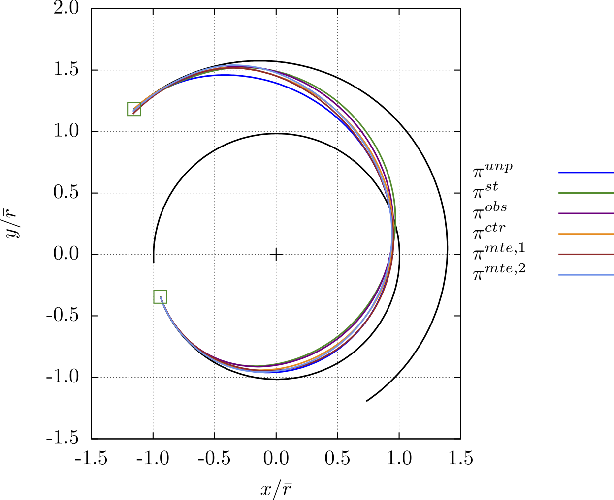
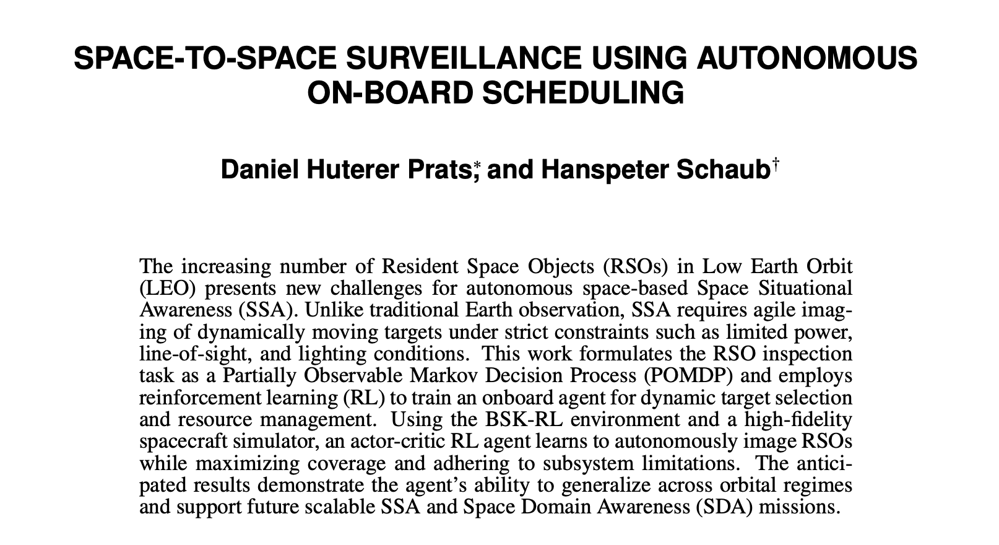
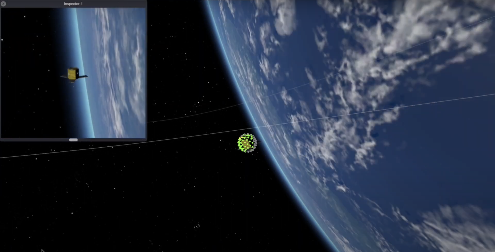
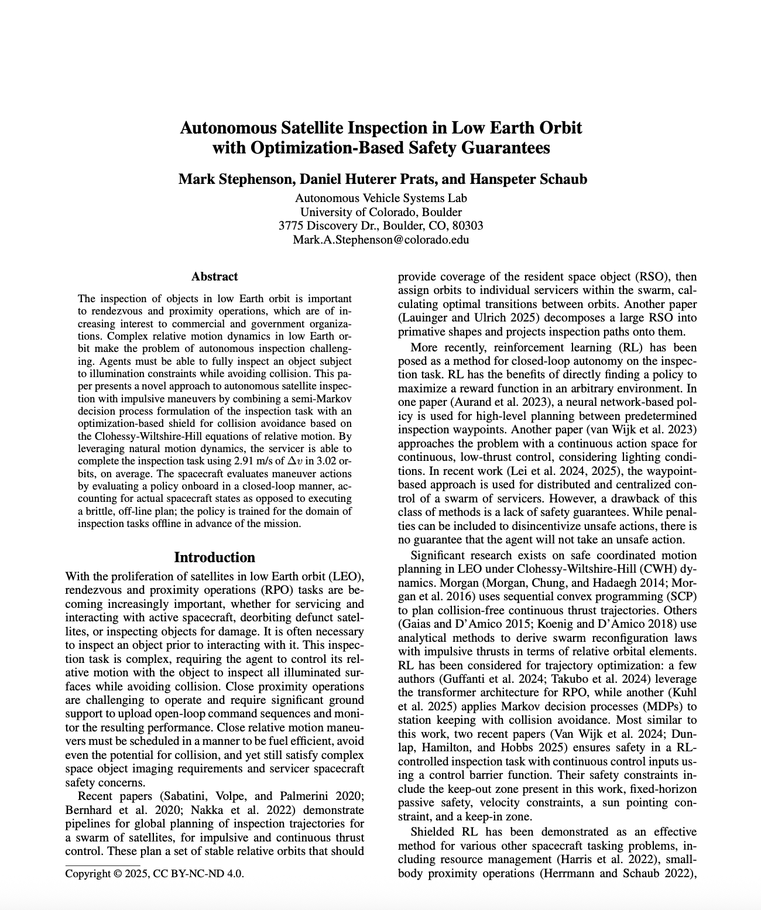

A blog-style deep dive into PPO-based robust Earth-to-Mars low-thrust guidance with equations, implementation notes, and interactive visuals.
My work sits at the intersection of autonomy, astrodynamics, and machine learning. At CU Boulder's Autonomous Vehicle Systems Lab, I focus on RL-driven scheduling and guidance for space-to-space surveillance and spacecraft inspection under real mission constraints (power, observability, pointing, and onboard resources). In parallel, I work on robust interplanetary trajectory design, inspection safety methods, and optimization tools for complex gravity-assist transfers.
Boulder, CO

A blog-style deep dive into PPO-based robust Earth-to-Mars low-thrust guidance with equations, implementation notes, and interactive visuals.

Actor-critic scheduling for autonomous RSO imaging in Basilisk/BSK-RL, presented at AMOS 2025.

RL-Driven Scheduling for Autonomous Space-to-Space Surveillance
This project trains an RL policy to select imaging and downlink actions for Resident Space Objects while respecting line-of-sight, power, wheel momentum, and data constraints in a high-fidelity Basilisk simulation.
Hosted on YouTube to avoid large-file playback issues on static hosting.


Reinforcement learning scheduler for autonomous RSO inspection with safety and illumination constraints. The environment includes battery, wheel desaturation, data storage, and eclipse/LOS observability effects.


Co-authored work on dwarf galaxy dark matter depletion, published in MNRAS (2021).

Genetic-algorithm-based optimization for interplanetary trajectories with gravity assists and impulsive maneuvers, balancing low delta-v against transfer time.